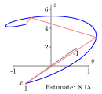
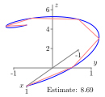
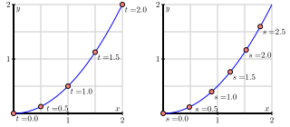
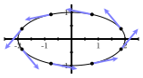
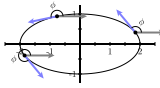
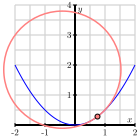
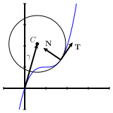

How can a definite integral be used to measure the length of a curve in 2- or 3-space?
Why is arc length useful as a parameter?
What is the curvature of a curve?
Given a space curve, there are two natural geometric questions one might ask: how long is the curve and how much does it bend? In this section, we answer both questions by developing techniques for measuring the length of a space curve as well as its curvature.
Preview Activity9.8.1.
In earlier investigations, we have used integration to calculate quantities such as area, volume, mass, and work. We are now interested in determining the length of a space curve.
Consider the smooth curve in 3-space defined by the vector-valued function \(\vr\text{,}\) where
for \(t\) in the interval \([0,2\pi]\text{.}\) Pictures of the graph of \(\vr\) are shown in Figure 9.8.1. We will use the integration process to calculate the length of this curve. In this situation we partition the interval \([0,2\pi]\) into \(n\) subintervals of equal length and let \(0 = t_0 \lt t_1 \lt t_2 \lt \cdots \lt t_n = b\) be the endpoints of the subintervals. We then approximate the length of the curve on each subinterval with some related quantity that we can compute. In this case, we approximate the length of the curve on each subinterval with the length of the segment connecting the endpoints. Figure 9.8.1 illustrates the process in three different instances using increasing values of \(n\text{.}\)


Figure9.8.1.Approximating the length of the curve with \(n=3\text{,}\)\(n=6\text{,}\) and \(n=9\text{.}\)
Write a formula for the length of the line segment that connects the endpoints of the curve on the \(i\)th subinterval \([t_{i-1},t_i]\text{.}\) (This length is our approximation of the length of the curve on this interval.)
Use your formula in part (a) to write a sum that adds all of the approximations to the lengths on each subinterval.
What do we need to do with the sum in part (b) in order to obtain the exact value of the length of the graph of \(\vr(t)\) on the interval \([0,2\pi]\text{?}\)
Subsection9.8.1Arc Length
Consider a smooth curve in 3-space that is parametrically described by the vector-valued function \(\vr\) defined by \(\vr(t) = \langle x(t), y(t), z(t)
\rangle.\)Preview Activity 9.8.1 shows that to approximate the length of the curve defined by \(\vr(t)\) as the values of \(t\) run over an interval \([a,b]\text{,}\) we partition the interval \([a,b]\) into \(n\) subintervals of equal length \(\Delta t\text{,}\) with \(a = t_0 \lt t_1 \lt \cdots
\lt t_n = b\) as the endpoints of the subintervals. On each subinterval, we approximate the length of the curve by the length of the line segment connecting the endpoints. The points on the curve corresponding to \(t = t_{i-1}\) and \(t = t_i\) are \((x(t_{i-1}),
y(t_{i-1}), z(t_{i-1}))\) and \((x(t_i), y(t_i), z(t_i))\text{,}\) respectively, so the length of the line segment connecting these points is
We now want to take the limit of this sum as \(n\) goes to infinity, but in its present form it might be difficult to see how. We first introduce \(\Delta t\) by multiplying by \(\frac{\Delta t}{\Delta t}\text{,}\) and see that
we can rewrite our arclength formula in a more succinct form as follows.
The length of a curve.
If \(\vr(t)\) defines a smooth curve \(C\) on an interval \([a,b]\text{,}\) then the length\(L\) of \(C\) is given by
\begin{equation}
L = \int_a^b |\vr'(t)| \, dt.\tag{9.8.1}
\end{equation}
Note that formula (9.8.1) applies to curves in any dimensional space. Moreover, this formula has a natural interpretation: if \(\vr(t)\) records the position of a moving object, then \(\vr'(t)\) is the object’s velocity and \(|\vr'(t)|\) its speed. Formula (9.8.1) says that we simply integrate the speed of an object traveling over the curve to find the distance traveled by the object, which is the same as the length of the curve, just as in one-variable calculus.
Activity9.8.2.
Here we calculate the arc length of two familiar curves.
Use Equation (9.8.1) to calculate the circumference of a circle of radius \(r\text{.}\)
Find the exact length of the spiral defined by \(\vr(t) = \langle \cos(t), \sin(t), t \rangle\) on the interval \([0,2\pi]\text{.}\)
We can adapt the arc length formula to curves in 2-space that define \(y\) as a function of \(x\) as the following activity shows.
Activity9.8.3.
Let \(y = f(x)\) define a smooth curve in 2-space. Parameterize this curve and use Equation (9.8.1) to show that the length of the curve defined by \(f\) on an interval \([a,b]\) is
Subsection9.8.2Parameterizing With Respect To Arc Length
In addition to helping us to find the length of space curves, the expression for the length of a curve enables us to find a natural parametrization of space curves in terms of arc length, as we now explain.
Shown below in Figure 9.8.2 is a portion of the parabola \(y = x^2/2\text{.}\) Of course, this space curve may be parametrized by the vector-valued function \(\vr\) defined by \(\vr(t) = \langle t, t^2/2\rangle\) as shown on the left, where we see the location at a few different times \(t\text{.}\) Notice that the points are not equally spaced on the curve.
A more natural parameter describing the points along the space curve is the distance traveled \(s\) as we move along the parabola starting at the origin. For instance, the right side of Figure 9.8.2 shows the points corresponding to various values of \(s\text{.}\) We call this an arc length parametrization.

Figure9.8.2.The parametrization \(\vr(t)\) (left) and a reparametrization by arc length.
To see that this is a more natural parametrization, consider an interstate highway cutting across a state. One way to parametrize the curve defined by the highway is to drive along the highway and record our position at every time, thus creating a function \(\vr\text{.}\) If we encounter an accident or road construction, however, this parametrization might not be at all relevant to another person driving the same highway. An arc length parametrization, however, is like using the mile markers on the side of road to specify our position on the highway. If we know how far we’ve traveled along the highway, we know exactly where we are.
If we begin with a parametrization of a space curve, we can modify it to find an arc length parametrization, as we now describe. Suppose that the curve is parametrized by the vector-valued function \(\vr = \vr(t)\) where \(t\) is in the interval \([a,b]\text{.}\) We define the parameter \(s\) through the function
If we assume that \(\vr'(t)\) is never 0, then \(L'(t) > 0\) for all \(t\) and \(s=L(t)\) is always increasing. This should seem reasonable: unless we stop, the distance traveled along the curve increases as we move along the curve.
Since \(s=L(t)\) is an increasing function, it is invertible, which means we may view the time \(t\) as a function of the distance traveled; that is, we have the relationship \(t=L^{-1}(s)\text{.}\) We then obtain the arc length parametrization by composing \(\vr(t)\) with \(t=L^{-1}(s)\) to obtain \(\vr(s)\text{.}\) Let’s illustrate this with an example.
Example9.8.3.
Consider a circle of radius \(5\) in 2-space centered at the origin. We know that we can parameterize this circle as
where \(t\) runs from 0 to \(2\pi\text{.}\) We see that \(\vr'(t) = \langle -5\sin(t), 5\cos(t) \rangle\text{,}\) and hence \(|\vr'(t)| = 5\text{.}\) It then follows that
Since \(s=L(t) = 5t\text{,}\) we may solve for \(t\) in terms of \(s\) to obtain \(t(s)=L^{-1}(s)
= s/5\text{.}\) We then find the arc length parametrization by composing
which means that we move along the curve with unit speed when we parameterize by arc length. This is clearly seen in Example 9.8.3 where \(|\vr'(s)| = 1\text{.}\) It follows that the parameter \(s\) is the distance traveled along the curve, as shown by:
\begin{equation*}
L(s) = \int_0^s\left|\frac{d}{ds}\vr(w)\right|~dw = \int_0^s1~dw = s.
\end{equation*}
Activity9.8.4.
In this activity we parameterize a line in 2-space in terms of arc length. Consider the line with parametric equations
to determine the length of the line from time 0 to time \(t\text{.}\)
Use the formula from (a) for \(s\) in terms of \(t\) to write \(t\) in terms of \(s\text{.}\) Then explain why a parameterization of the line in terms of arc length is
Since \(t \geq 0\text{,}\) we can solve the equation \(s = t^2+4t\) (or \(t^2+4t-s=0\)) for \(t\) to obtain \(t = \frac{-4 +\sqrt{16+4s}}{2} = -2 + \sqrt{4+s}\text{.}\) So we can parameterize our curve in terms of arc length by
These examples illustrate a general method. Of course, evaluating an arc length integral and finding a formula for the inverse of a function can be difficult, so while this process is theoretically possible, it is not always practical to parameterize a curve in terms of arc length. However, we can guarantee that such a parameterization exists, and this observation plays an important role in the next section.
Subsection9.8.3Curvature
For a smooth space curve, the curvature measures how fast the curve is bending or changing direction at a given point. For example, we expect that a line should have zero curvature everywhere, while a circle (which is bending the same at every point) should have constant curvature. Circles with larger radii should have smaller curvatures.
To measure the curvature, we first need to describe the direction of the curve at a point. We may do this using a continuously varying tangent vector to the curve, as shown at left in Figure 9.8.5. The direction of the curve is then determined by the angle \(\phi\) each tangent vector makes with a horizontal vector, as shown at right in Figure 9.8.5.


Figure9.8.5.Left: Tangent vectors to an ellipse. Right: Angles of tangent vectors.
Informally speaking, the curvature will be the rate at which the angle \(\phi\) is changing as we move along the curve. Of course, this rate of change will depend on how we move along the curve; if we move with a greater speed along the curve, then \(\phi\) will change more rapidly. This is why the speed limit is sometimes lowered when we enter a curve on a highway. In other words, the rate of change of \(\phi\) will depend on the parametrization we use to describe the space curve. To eliminate this dependence on the parametrization, we choose to work with an arc length parametrization \(\vr(s)\text{,}\) which means we move along the curve with unit speed.
Using an arc length parametrization \(\vr(s)\text{,}\) we define the tangent vector \(\vT(s) = \vr'(s)\text{,}\) and note that \(|\vT(s)| = 1\text{;}\) that is, \(\vT(s)\) is a unit tangent vector. We then have \(\vT(s) = \langle \cos (\phi(s)),
\sin(\phi(s)) \rangle\text{,}\) which means that
Note that \(\kappa\) is the Greek lowercase letter “kappa”.
Activity9.8.5.
We should expect that the curvature of a line is 0 everywhere. To show that our definition of curvature measures this correctly in 2-space, recall that (9.8.4) gives us the arc length parameterization
of a line. Use this information to explain why the curvature of a line is 0 everywhere.
Recall that an arc length parameterization of a circle in 2-space of radius \(a\) centered at the origin is, from (9.8.3),
\begin{equation*}
\vr(s) = \left\langle a \cos\left(\frac{s}{a}\right),~
a \sin\left(\frac{s}{a}\right)\right\rangle.
\end{equation*}
Show that the curvature of this circle is the constant \(\frac{1}{a}\text{.}\) What can you say about the relationship between the size of the radius of a circle and the value of its curvature? Why does this make sense?
The definition of curvature relies on our ability to parameterize curves in terms of arc length. Since we have seen that finding an arc length parametrization can be difficult, we would like to be able to express the curvature in terms of a more general parametrization \(\vr(t)\text{.}\)
To begin, we need to describe the vector \(\vT\text{,}\) which is a vector tangent to the curve having unit length. Of course, the velocity vector \(\vr'(t)\) is tangent to the curve; we simply need to normalize its length to be one. This means that we may take
This last formula allows us to use any parameterization of a curve to calculate its curvature. There is another useful formula, given below, whose derivation is left for the exercises.
Formulas for curvature.
If \(\vr\) is a vector-valued function defining a smooth space curve \(C\text{,}\) and if \(\vr'(t)\) is not zero and if \(\vr''(t)\) exists, then the curvature \(\kappa\) of \(C\) satisfies
Find the curvature of the ellipse. Assuming \(0 \lt b \lt a\text{,}\) at what points is the curvature the greatest and at what points is the curvature the smallest? Does this agree with your intuition?
The standard helix has parameterization \(\vr(t) = \cos(t) \vi + \sin(t) \vj + t \vk\text{.}\) Find the curvature of the helix. Does the result agree with your intuition?
The curvature has another interpretation. Recall that the tangent line to a curve at a point is the line that best approximates the curve at that point. The curvature at a point on a curve describes the circle that best approximates the curve at that point. Remembering that a circle of radius \(a\) has curvature \(1/a\text{,}\) then the circle that best approximates the curve near a point on a curve whose curvature is \(\kappa\) has radius \(1/\kappa\) and will be tangent to the tangent line at that point and has its center on the concave side of the curve. This circle, called the osculating circle of the curve at the point, is shown in Figure 9.8.7 for a portion of a parabola.

Figure9.8.7.The osculating circle
Subsection9.8.4Summary
The integration process shows that the length \(L\) of a smooth curve defined by \(\vr(t)\) on an interval \([a,b]\) is
\begin{equation*}
L = \int_a^b |\vr'(t)| \, dt.
\end{equation*}
Arc length is useful as a parameter because when we parameterize with respect to arc length, we eliminate the role of speed in our calculation of curvature and the result is a measure that depends only on the geometry of the curve and not on the parameterization of the curve.
We define the curvature \(\kappa\) of a curve in 2- or 3-space to be the rate of change of the magnitude of the unit tangent vector with respect to arc length, or
The WeBWorK problems are written by many different authors. Some authors use parentheses when writing vectors, e.g., \((x(t),y(t),z(t))\) instead of angle brackets \(\langle x(t),y(t),z(t) \rangle\text{.}\) Please keep this in mind when working WeBWorK exercises.
1.
A child wanders slowly down a circular staircase from the top of a tower. With \(x,y,z\) in feet and the origin at the base of the tower, her position \(t\) minutes from the start is given by
\begin{equation*}
x=10\cos t,\quad y = 10 \sin t, \quad z = 100 - 5 t.
\end{equation*}
(a) How tall is the tower?
height = ft
(b) When does the child reach the bottom?
time = minutes
(c) What is her speed at time \(t\text{?}\)
speed = ft/min
(d) What is her acceleration at time \(t\text{?}\)
(a) Since \(z=100\) feet when \(t=0\text{,}\) the tower is 100 feet high. (b) The child reaches the bottom when \(z=0\text{,}\) so \(t=100/5=20\) minutes. (c) Her velocity is given by
\begin{equation*}
\vec v =\frac{d\vec r}{dt} = -(10\sin t)\vec i +(10\cos t)\vec j - 5\vec k,
\end{equation*}
Compute the arclength function \(s(t)\text{:}\) (with initial point \(t=0\)).
4.
Find the length of the given curve:
\begin{equation*}
\mathbf{r} \left( t \right) = \left( 3 t, -4 \sin t, -4 \cos t \right)
\end{equation*}
where \(-1 \leq t \leq 1\text{.}\)
5.
Find the curvature of \(y=\sin \left( -3 x \right)\) at \(x = \frac{\pi}{4}\text{.}\)
6.
Consider the path \(\mathbf{r}(t) = (14 t, 7 t^2, 7\ln t)\) defined for \(t > 0\text{.}\)
Find the length of the curve between the points \((14, 7, 0)\) and \((70, 175, 7 \ln(5))\text{.}\)
7.
Find the curvature \(\kappa (t)\) of the curve \(\mathbf{r} (t) = \left( 3 \sin t \right)
\mathbf{i} + \left( 3 \sin t \right) \mathbf{j} + \left( -1 \cos t \right) \mathbf{k}\)
8.
A factory has a machine which bends wire at a rate of 2 unit(s) of curvature per second. How long does it take to bend a straight wire into a circle of radius 9?
seconds
9.
Find the unit tangent vector at the indicated point of the vector function
\begin{equation*}
\mathbf{r}(t) = e^{20 t}\cos t \,\mathbf i +
e^{20 t}\sin t \,\mathbf j + e^{20 t} \,\mathbf k
\end{equation*}
Consider the moving particle whose position at time \(t\) in seconds is given by the vector-valued function \(\vr\) defined by \(\vr(t) = 5t \vi + 4\sin(3t) \vj + 4\cos(3t) \vk\text{.}\) Use this function to answer each of the following questions.
Find the unit tangent vector, \(\vT(t)\text{,}\) to the space curve traced by \(\vr(t)\) at time \(t\text{.}\) Write one sentence that explains what \(\vT(t)\) tells us about the particle’s motion.
Determine the speed of the particle moving along the space curve with the given parameterization.
Find the exact distance traveled by the particle on the time interval \([0,\pi/3]\text{.}\)
Find the average velocity of the particle on the time interval \([0, \pi/3]\text{.}\)
Determine the parameterization of the given curve with respect to arc length.
12.
Let \(y = f(x)\) define a curve in the plane. We can consider this curve as a curve in three-space with \(z\)-coordinate 0.
Find a parameterization of the form \(\vr(t) = \langle x(t), y(t), z(t) \rangle\) of the curve \(y=f(x)\) in three-space.
Consider the single variable function defined by \(y = 4x^2 - x^3.\)
Find a parameterization of the form \(\vr(t) = \langle x(t), y(t) \rangle\) that traces the curve \(y = 4x^2 - x^3\) on the interval from \(x = -3\) to \(x = 3\text{.}\)
Write a definite integral which, if evaluated, gives the exact length of the given curve from \(x = -3\) to \(x = 3\text{.}\) Why is the integral difficult to evaluate exactly?
Determine the curvature, \(\kappa(t)\text{,}\) of the parameterized curve. (Exercise 9.8.5.12 might be useful here.)
Use appropriate technology to approximate the absolute maximum and minimum of \(\kappa(t)\) on the parameter interval for your parameterization. Compare your results with the graph of \(y = 4x^2 - x^3\text{.}\) How do the absolute maximum and absolute minimum of \(\kappa(t)\) align with the original curve?
14.
Consider the standard helix parameterized by \(\vr(t) = \cos(t) \vi + \sin(t) \vj + t \vk\text{.}\)
Recall that the unit tangent vector, \(\vT(t)\text{,}\) is the vector tangent to the curve at time \(t\) that points in the direction of motion and has length 1. Find \(\vT(t)\text{.}\)
Explain why the fact that \(| \vT(t) | = 1\) implies that \(\vT\) and \(\vT'\) are orthogonal vectors for every value of \(t\text{.}\) (Hint: note that \(\vT \cdot \vT = |\vT|^2 = 1,\) and compute \(\frac{d}{dt}[\vT \cdot \vT]\text{.}\))
For the given function \(\vr\) with unit tangent vector \(\vT(t)\) (from (a)), determine \(\vN(t) = \frac{1}{|\vT'(t)|} \vT'(t)\text{.}\)
What geometric properties does \(\vN(t)\) have? That is, how long is this vector, and how is it situated in comparison to \(\vT(t)\text{?}\)
Let \(\vB(t) = \vT(t) \times \vN(t)\text{,}\) and compute \(\vB(t)\) in terms of your results in (a) and (c).
What geometric properties does \(\vB(t)\) have? That is, how long is this vector, and how is it situated in comparison to \(\vT(t)\) and \(\vN(t)\text{?}\)
Sketch a plot of the given helix, and compute and sketch \(\vT(\pi/2)\text{,}\)\(\vN(\pi/2)\text{,}\) and \(\vB(\pi/2)\text{.}\)
In Exercise 9.8.5.14 we showed that \(\lvert \vT(t) \rvert = 1\) implies that \(\vT(t)\) is orthogonal to \(\vT'(t)\) for every value of \(t\text{.}\) Explain what this tells us about \(\lvert \vT(t) \times \vT'(t) \rvert\) and conclude that
In this exercise we explore how to find the osculating circle for a given curve. As an example, we will use the curve defined by \(f(x) = x^2\text{.}\) Recall that this curve can be parameterized by \(x(t) = t\) and \(y(t)=t^2\text{.}\)
Use (9.8.5) to find \(\vT(t)\) for our function \(f\text{.}\)
To find the center of the osculating circle, we will want to find a vector that points from a point on the curve to the center of the circle. Such a vector will be orthogonal to the tangent vector at that point. Recall that \(\vT(s) = \langle \cos(\phi(s)), \sin(\phi(s)) \rangle\text{,}\) where \(\phi\) is the angle the tangent vector to the curve makes with a horizontal vector. Use this fact to show that
Explain why this tells us that \(\frac{dT}{ds}\) is orthogonal to \(\vT\text{.}\) Let \(\vN\) be the unit vector in the direction of \(\frac{dT}{ds}\text{.}\) The vector \(\vN\) is called the principal unit normal vector and points in the direction toward which the curve is turning. The vector \(\vN\) also points toward the center of the osculating circle.
Find \(\vT\) at the point \((1,1)\) on the graph of \(f\text{.}\) Then find \(\vN\) at this same point. How do you know you have the correct direction for \(\vN\text{?}\)
Let \(P\) be a point on the curve. Recall that \(\rho = \frac{1}{\kappa}\) at point \(P\) is the radius of the osculating circle at point \(P\text{.}\) We call \(\rho\) the radius of curvature at point \(P\text{.}\) Let \(C\) be the center of the osculating circle to the curve at point \(P\text{,}\) and let \(O\) be the origin. Let \(\mathbf{\gamma}\) be the vector \(\overrightarrow{OC}\text{.}\) See Figure 9.8.8 for an illustration using an arbitrary function \(f\text{.}\)
Figure9.8.8.An osculating circle.
Which vector, in terms of \(\rho\) and \(\vN\) points from the point \(P\) to the point \(C\text{?}\) Use this vector to explain why
Finally, use the previous work to find the center of the osculating circle for \(f\) at the point \((1,1)\text{.}\) Draw pictures of the curve and the osculating circle to verify your work.